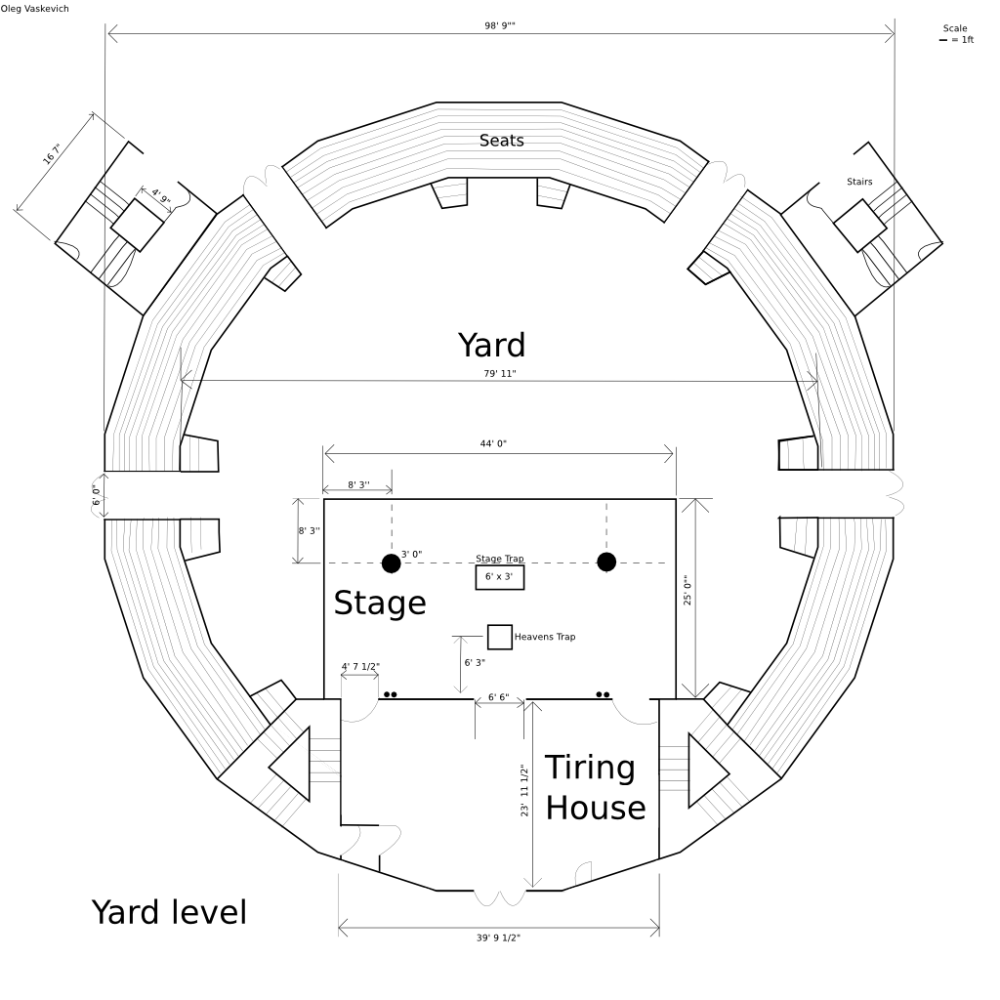
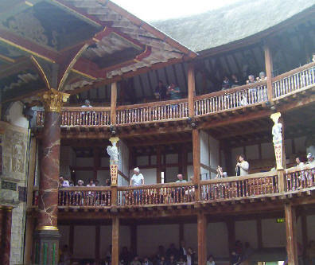
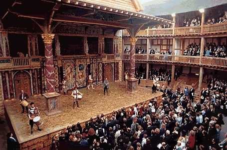
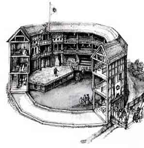
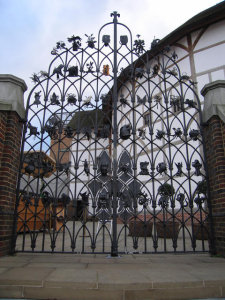

The Globe Theater
Welcome! This site contains estimated blueprints of the Globe Theater in London. These blueprints contain the three major levels of the Globe Theater. Click on any of the levels to see that blueprint, and hover your mouse over various parts of the blueprint to see more information. NOTE: Most or all of the images are from the new Globe built in London. This is because it is easier to identify the parts when there is a color photograph than a predicted sketch.
[Yard Level] | 2nd Level | 3rd Level
 This is where the wealthy and middle class would sit. The cost was 2 pence for the galleries, and there would be a collector with a box who stood at the stairs leading there.
This is the stage. It measured 25 by 44 feet. The stage was where all of the action went on. In the middle, there are two columns which support the roof. Also, there is a trap door in the floor and a heavens trap. The heavens trap was just a rope system from which actors would soar from. Also, there are 3 doors which would lead into back stage and the tiring house.
This is where the peasants and other low-classes would stand. It cost 1 penny to get in. The money would be taken at one of the four main public entrances. Here in the pit, 1000 peasants would fit in to see the play. The people in the galleries would have a clear view of the peasants, which were usually referred as "groundlings" or "stinkards".
|  | This is one of the four public entrances. At the gate, there would be a person with a box which would collect the 1 pence required to get in to the pit, or, 2 pence to get into the galleries. |
Page last modified on Tuesday, November 20th, 2007. © 2007 Oleg Vaskevich.